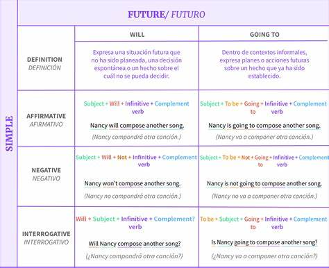
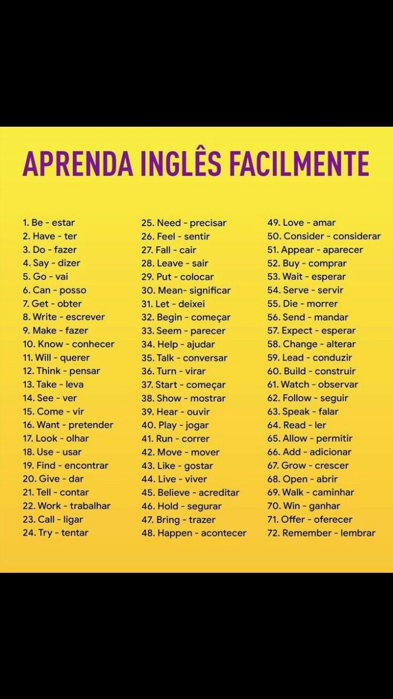

Nesta seção, abordaremos os principais aspectos gramaticais do idioma inglês, como:

Nesta seção, ampliaremos o vocabulário em inglês, explorando palavras e expressões relacionadas:

© 2024 Gabriel Santos Araújo